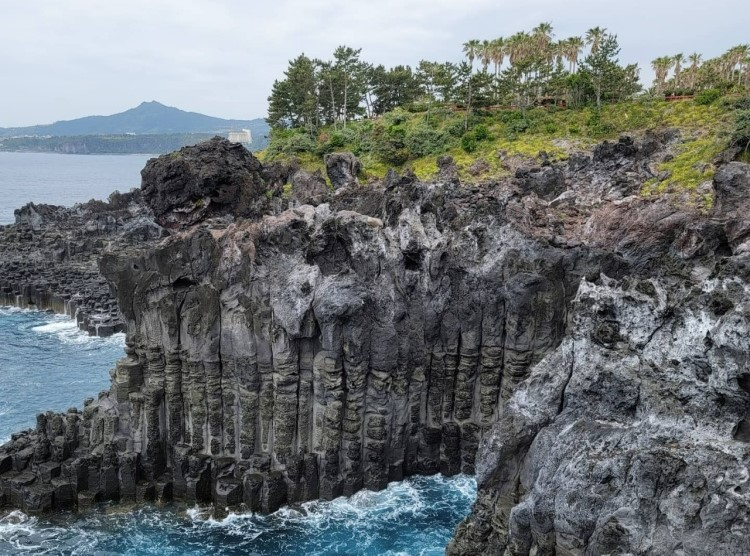

대포 주상절리
( Jusangjeolli Cliff )

| 주소 | 제주 서귀포시 이어도로 36-24 |
| 정보 | 육각형의 돌기둥이 겹겹이 쌓여 성처럼 우뚝우뚝 솟아있는 돌기둥 사이로 파도가 부서지는 모습은 한폭의 그림같다. 지삿개해안 주상절리는 약 1km에 이르는 해안에 걸쳐 높이가 30m정도인 사각내지 육각형 바위가 깎아지른 절벽을 이루고 있다. 대포동에서 볼 수 있는 화산암의 주상절리는 지표로 분출한 용암이 낮은 곳으로 흐르면서 생긴다. 특히 용암은 흐르는 방향에 수직이면서 서로 120도를 이루는 수직단열에 의해 다각형의 모습을 보인다. 바다와 가장 인접한 주상절리일수록 더욱 뚜렷하게 다각형을 이룬다. |
| 사이트 바로가기 | 위치 리뷰보기 |